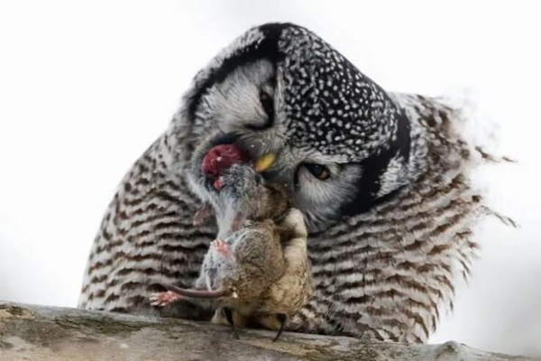

The Northern Hawk-Owl, a magnificent and skilled hunter, roams the northern boreal forests of North America, Europe, and Asia. With its sleek and agile body, adorned with a beautiful combination of grey and white feathers, it possesses an enchanting appearance.
Its piercing yellow eyes stand out, resembling orbs of golden wisdom. Interestingly, the Northern Hawk-Owl is known for its ability to hover in mid-air, akin to a miniature helicopter, as it surveys its surroundings with exceptional precision.
e Northern Hawk-Owl, with its discerning eye for the perfect spot, constructs its nest in the midst of Minnesota’s lush and sprawling forests. It seeks out sturdy coniferous trees, fashioning a cozy abode high among the branches.
These clever birds take advantage of abandoned nests built by other birds, repurposing them for their own use. With meticulous care, they line the nest with soft materials like feathers and moss, creating a snug retreat for their young.
The Northern Hawk-Owl is a skilled predator that prowls the woodlands of Minnesota in search of its next meal. Its diverse palate includes small mammals like voles and mice, as well as birds and even insects. With precision and stealth, it soars through the forest, honing in on its unsuspecting prey. Unlike other owls, the Northern Hawk-Owl hunts during daylight hours, utilizing its exceptional vision and sharp talons to secure its feast.
Minnesota’s beloved Northern Hawk-Owl has witnessed both triumph and challenges throughout its history. Once facing threats of habitat loss and declining populations, conservation efforts have played a vital role in its protection.
Dedicated individuals and organizations have worked tirelessly to preserve its natural habitat, ensuring the availability of suitable nesting sites and an abundance of prey. These ongoing conservation efforts have led to positive outcomes, allowing the Northern Hawk-Owl to thrive in Minnesota’s forests and continue enchanting nature enthusiasts and casual observers alike.